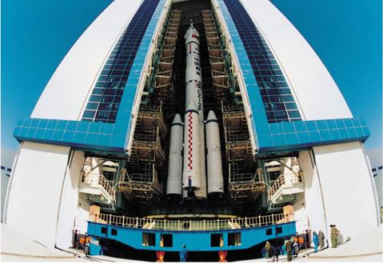

神舟一号飞船是我国载人航天工程中发射的第一艘无人试验飞船，飞船于1999年11月20日凌晨6点在酒泉卫星发射中心发射升空，承担发射任务的是在长征2F捆绑式火箭的基础上改进研制的长征2F载人航天火箭。在发射点火十分钟后，船箭分离，飞船准确进入预定轨道。
飞船入轨后，地面的各测控中心和分布在太平洋、印度洋上的测量船对飞船进行了跟踪测控，同时，还对飞船内的生命保障系统、姿态控制系统等进行了测试。
北京时间1999年11月21日凌晨3时41分，神舟一号飞船顺利降落在内蒙古中部地区的着陆场。飞船在太空中共飞行了21个小时。
飞船由轨道舱、返回舱和推进舱组成。轨道舱是航天员生活和工作的地方。返回舱是飞船的指挥控制中心，航天员乘坐其上天和返回地面。推进舱也称动力舱，为飞船在轨飞行和返回时提供能源和动力。
这次试验飞行没有载人，主要验证了有关创新技术。它是中国载人航天工程的首次飞行，标志着中国在载人航天飞行技术上有了重大突破，是中国航天史上的重要里程碑。
这次发射首次采用了在技术厂房对飞船、火箭联合体垂直总装与测试，整体垂直运输至发射场，进行远距离测试发射控制的新模式。我国在原有的航天测控网基础上新建的符合国际标准体制的陆海基航天测控网，也在这次发射试验中首次投入使用。飞船在轨运行期间，地面测控系统和分布于公海的4艘远望号测量船对其进行了跟踪与测控，成功进行了一系列科学试验。
神舟一号试验飞船的成功发射与回收，标志着我国载人航天技术获得了新的重大突破。
